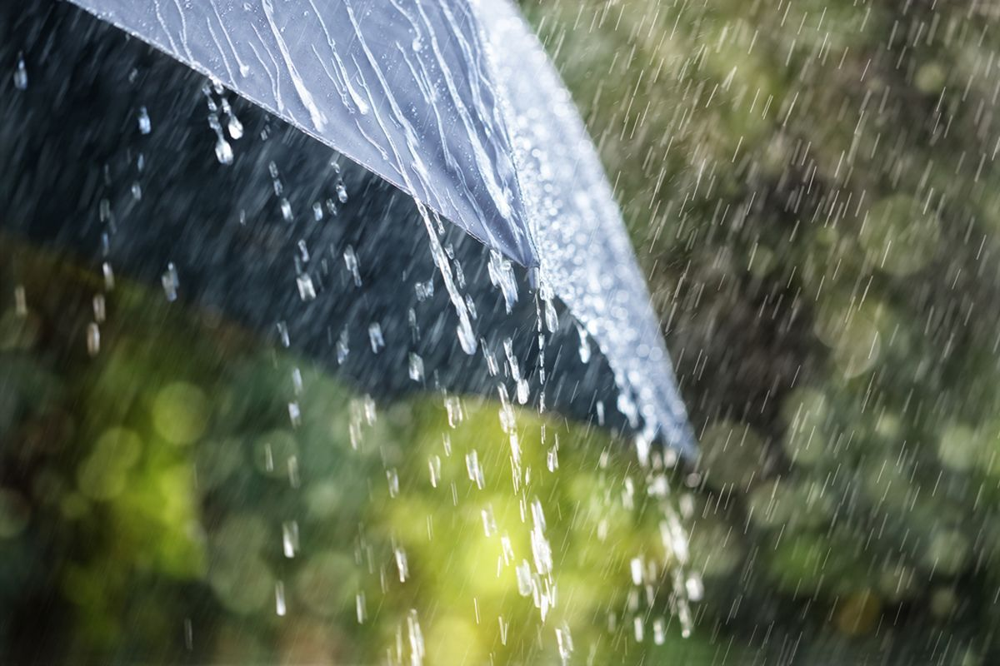
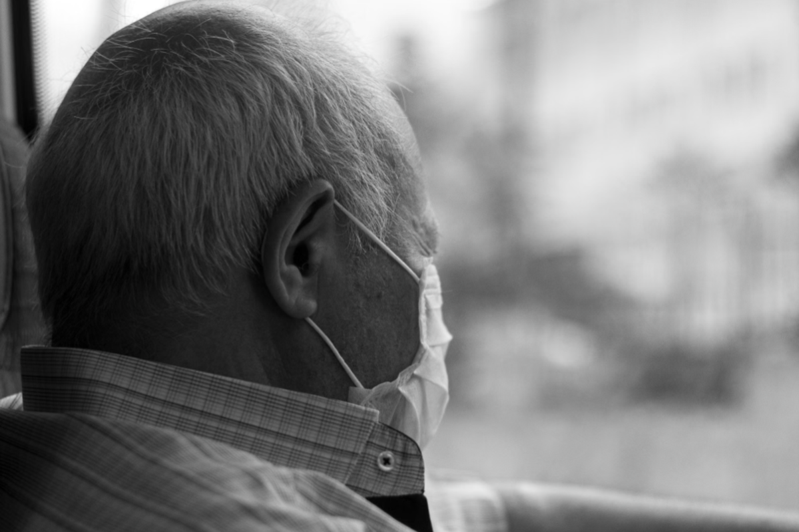

Kabar pemerintahan, dijelaskan jelas.
Keputusan Presiden, proses di MPR, dan RUU yang sedang dibahas — lengkap dengan konteks di balik setiap cerita.
 Top story
Top story
Gibran Mengundurkan Diri, Kursi Wapres Berganti
Presiden Prabowo melepas Wakil Presiden Gibran Rakabuming Raka di Istana Merdeka, Kamis (12/11/2026), sebelum Gibran mengundurkan diri ke MPR. Pemilihan wapres baru kemudian diproses melalui MPR.
Terbaru dari Istana dan MPR
 Wapres
WapresTiga Kriteria Wapres Pengganti Gibran Versi Gerindra
Jubir Gerindra Bahtra Banong menyebut tiga syarat: taat dan loyal kepada Presiden, mampu bekerja sama, dan tidak menjadi beban.
 Koalisi Serahkan Hak Usulan Cawapres kepada Prabowo
Koalisi Serahkan Hak Usulan Cawapres kepada PrabowoPAN, Golkar, dan Demokrat menyatakan menghormati kewenangan Presiden dan MPR dalam menentukan nomor cawapres.
 DPR
DPRKomisi III DPR Mulai Bahas RUU Penyadapan
Baintelkam Polri menilai RUU ini dibutuhkan demi kepastian hukum, bukan sekadar untuk keperluan penyidikan.
 ASEAN
ASEANPrabowo Hadiri KTT ke-29 ASEAN–China
Presiden hadir dengan setelan abu-abu. Di sidelines KTT ia meminta maaf atas kabut asap Indonesia yang mengganggu Singapura dan Malaysia.
Sorotan lain
- UU LLAJ Digugat ke Mahkamah Konstitusi
Penguji menilai keterbatasan anggaran tak boleh dijadikan alasan membiarkan jalan rusak.
- Kasasi Eks Sekretaris MA Nurhadi Ditolak
Mahkamah Agung menolak kasasi; Nurhadi tetap dihukum lima tahun pidana.
- PDI-P: Tidak Cawe-cawe Usung Nama Cawapres
Jubir PDI-P menyatakan menghormati proses di MPR dan tidak menyebut nama sebelum waktunya.
Bencana alam, dan langkah berikutnya.
Karhutla, erupsi gunung, cuaca ekstrem, dan banjir: apa yang terjadi, siapa yang terdampak, serta apa yang perlu disiapkan.

Karhutla Kalteng Tersisa 254,89 Hektare
BNPB masih menangani kebakaran hutan dan lahan di Kalimantan Tengah sampai 14 November: tersisa 254,89 hektar pada 21 titik api, dari semula 272,09 hektar pada 26 titik api.
Peringatan terbaru
Gunung Ibu Erupsi Lagi, BNPB Ingatkan Jangan Terpancing Hoaks
Kolom abu teramati 500 meter di atas kawah, atau sekitar 1.825 meter di atas permukaan laut. Tingkat aktivitas masih Level II atau Waspada.
 Cuaca ekstrem
Cuaca ekstremBMKG Peringatkan Cuaca Ekstrem di Aceh
Mendagri Tito Karnavian meminta pemerintah daerah memperkuat kesiapsiagaan, termasuk menyiapkan logistik dan fasilitas kesehatan.

Hujan lebatHujan Lebat Diprediksi Besok di 27 Provinsi
BMKG memprakirakan hujan sedang hingga lebat di Aceh, Sumatera Utara, Banten, DKI Jakarta, Jawa Barat, DI Yogyakarta, Jawa Timur, dan lainnya.
104 Perusahaan Diselidiki Soal Karhutla
Di KTT ASEAN, Presiden menyebut 104 perusahaan diselidiki dan 11 di antaranya sudah didakwa terkait kebakaran hutan dan lahan.
Sorotan lain
- Hujan Lebat Berlanjut hingga 19 November
BMKG memprakirakan hujan lebat hingga sangat lebat masih mengguyur sejumlah wilayah sampai 19 November, seiring peralihan menuju musim hujan.
- 588 Rumah Rusak di Bandung Barat
BNPB mencatat 588 rumah rusak akibat cuaca ekstrem di Bandung Barat.
- Dua Bibit Siklon Tropis terpantau di wilayah Indonesia
BMKG memperingatkan dampaknya: 92B di Teluk Benggala dan 96S di Samudra Hindia barat Sumatera.
Berita kesehatan, yang bisa langsung dipakai.
Riset, pembaruan layanan kesehatan, dan panduan kesehatan sehari-hari, dijelaskan dengan bahasa yang mudah dipahami.
 Featured
Featured
Gigi Berlubang Masih Jadi Masalah Banyak Pasien
Dokter menjelaskan perawatan yang tepat dan langkah pencesannya, mulai dari kebiasaan menyikat gigi secara rutin.
Terbaru dari kesehatan

InfeksiLansia di Atas 70 Tahun Juga Rentan Infeksi RSV
Pencegahan tidak boleh hanya menyasar bayi; kelompok usia lanjut termasuk yang rentan terhadap infeksi saluran napas.
 Gagal ginjal
Gagal ginjalPasien Gagal Ginjal Harus Membatasi Minum Air Putih
Dokter menjelaskan kenapa pasien dengan ginjal yang tidak berfungsi optimal perlu mengatur jumlah cairan, bukan justru menambahnya.
Psikolog Bagikan 3 Cara Cegah Burnout
Jangan tunggu kehabisan energi. Psikolog menjelaskan cara mencegah kelelahan menumpuk sebelum menjadi burnout.
 Kebijakan
KebijakanIHDC Meluncurkan Ideologi Kesehatan Pancasila
IHDC memperkenalkan gagasan itu sebagai rujukan bersama bagi arah kebijakan kesehatan nasional.
Sorotan lain
- Mitos atau Fakta, Diabetes Diturunkan Silang?
Dokter membahas risiko diabetes pada keturunan pertama dan faktor yang benar-benar berperan di dalamnya.
- Kemenkes Siapkan Aturan Baru Klinik Kopdes Merah Putih
Kemenkes sedang menyiapkan perubahan skema layanan pada Klinik Kopdes Merah Putih.
- Lemak Berlebih Juga Bisa Picu Diabetes
Berat badan bukan satu-satunya penanda risiko diabetes; komposisi lemak tubuh juga berperan.